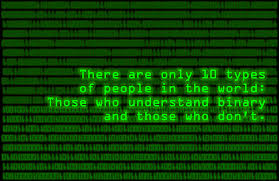

Learning Syle
Well, according to the assessments we took, I guess I'm what you'd call ambidextrous. They have two categories, one being audio/visual and the other being primarily reading.
I was very pleased with that result. I do prefer learning with an audio/visual approach, significantly actually, but they're saying that I do well with text as well.
Performance Thus Far
Problem = Time Management. Getting into "the zone" feels too unreliable, making it difficult to both be effective and live healthily.
I have personal struggles on my mind as well, so that definitely adds to it. It's funny, though. I haven't felt this alive in a very long time and I love this work very much.
I see so many possibilities in this field. It's very exciting and I want so much to be a part of it.